Pra-QA GAGAL gagal 1 peringatan 1 lulus 19 belum disetujui
Arahkan kursor ke blok untuk detail · ▲ = thumbnail (klik) · ♪ = SFX · kata hijau di transkrip = anchor elemen.
you know one of the hardest lessons in life
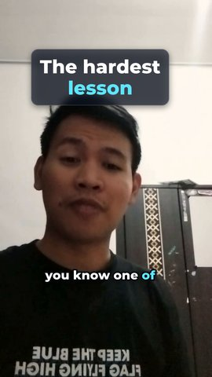
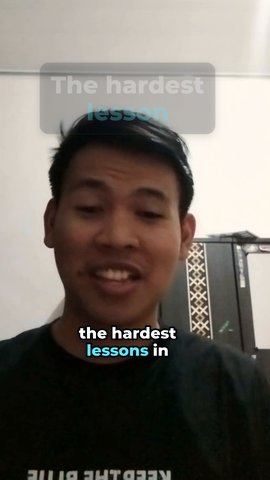
| Tipe / efek | Teks | Waktu (s) | Durasi | Anchor | Masuk/keluar | Pra-QA |
|---|---|---|---|---|---|---|
| judul glass-type@0.1 | The hardest lesson | 0.21–3.21 | 3.00s | kata “you” | naik/fade | ✅ |
| push | push ×1.06, gerak 1.20s, standar | 1.95–3.50 | 1.55s | / | ✅ |
is realizing that not everything is within our control we cannot control what people think of us how they treat us or what tomorrow will bring
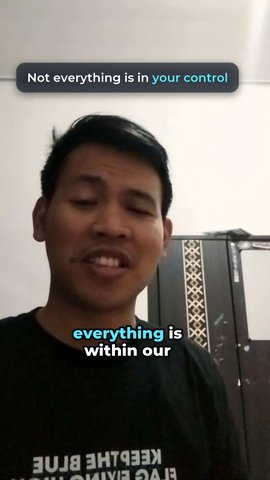
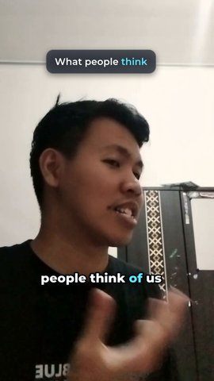
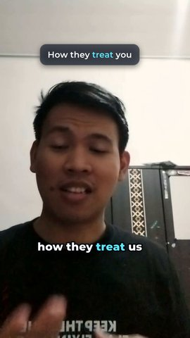
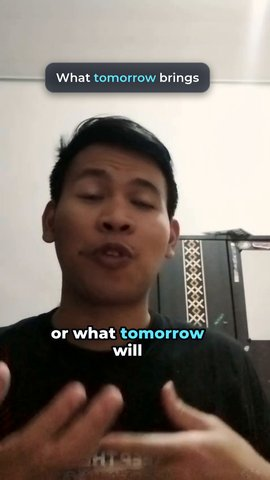
| Tipe / efek | Teks | Waktu (s) | Durasi | Anchor | Masuk/keluar | Pra-QA |
|---|---|---|---|---|---|---|
| teks | Not everything is in your control | 4.89–9.61 | 4.72s | kata “realizing” | naik/fade | ✅ |
| teks | What people think | 10.99–13.21 | 2.22s | kata “people” | naik/fade | ✅ |
| teks | How they treat you | 13.31–15.45 | 2.14s | kata “how” | naik/fade | ✅ |
| teks | What tomorrow brings | 15.55–17.62 | 2.07s | kata “or” | naik/fade | ✅ |
we cannot change the past no matter how much we regret it
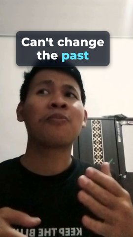
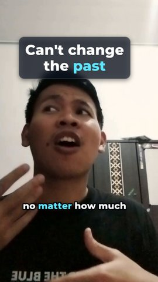
| Tipe / efek | Teks | Waktu (s) | Durasi | Anchor | Masuk/keluar | Pra-QA |
|---|---|---|---|---|---|---|
| judul | Can't change the past | 18.21–22.18 | 3.97s | kata “change” | naik/fade | ✅ |
| push | push ×1.06, gerak 1.00s, standar | 18.82–22.18 | 3.37s | / | ✅ |
but we can control how we respond We can control our efforts, our choices and the way we treat ourselves when things don't go as planned.
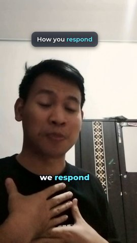
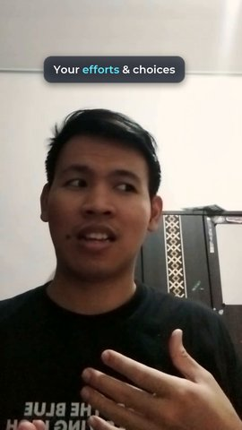
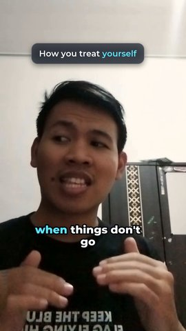
| Tipe / efek | Teks | Waktu (s) | Durasi | Anchor | Masuk/keluar | Pra-QA |
|---|---|---|---|---|---|---|
| teks | How you respond | 22.61–26.24 | 3.63s | kata “can” | naik/fade | ✅ |
| teks | Your efforts & choices | 26.34–31.06 | 4.72s | kata “can” ke-2 | naik/fade | ✅ |
| teks | How you treat yourself | 31.16–36.41 | 5.24s | kata “way” -0.20s | naik/fade | ✅ |
Sometimes, we spend so much energy trying to control that we never are to control in the first place.
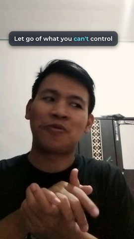
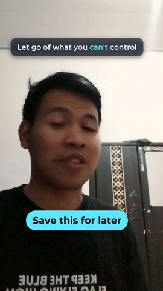
| Tipe / efek | Teks | Waktu (s) | Durasi | Anchor | Masuk/keluar | Pra-QA |
|---|---|---|---|---|---|---|
| teks | Let go of what you can't control | 40.61–46.50 | 5.89s | kata “trying” | naik/fade | ✅ |
| cta | Save this for later | 43.95–46.50 | 2.55s | kata “never” | pop/fade | ✅ |
| ID | Aturan | Detail | |
|---|---|---|---|
| ❌ | K04.1 | Rekaman hasil ingest: resolusi = `format.resolusi`, fps = `format.fps`, tinggi sumber ≥ `ingest.tinggi-min`. | sumber 478x850 di bawah minimum (di-ingest dengan --paksa) |
| ⚠️ | K01.2 | `words.json` sudah dikoreksi manual (`"dikoreksi": true`): ejaan, nama, istilah. | words.json belum dikoreksi manual (_meta.dikoreksi=false) |
| ✅ | E17.1 | Durasi elemen ber-`efek: glass-type` dalam rentang `durasi` (2–4 s). | 1 elemen dalam 2–4s |
| ✅ | K00.1 | Kotak pembatas setiap elemen teks/grafis berada di dalam zona aman pada setiap frame saat ia tampil, termasuk saat anima | 47 elemen di dalam zona aman [60, 250, 960, 1520] |
| ✅ | K00.2 | Dua elemen teks tidak tumpang tindih pada waktu yang sama (kecuali caption di atas teks depth). | |
| ✅ | K01.1 | Timing caption berasal dari transkrip ber-timestamp per kata (`cache/words.json`, WhisperX / forced alignment), bukan pe | backend whisperx, 25 potongan |
| ✅ | K01.3 | Satu potongan caption ≤ `caption.baris-maks` baris dan ≤ `caption.karakter-maks-baris` karakter per baris. | 25 potongan ≤ 2 baris × 18 karakter |
| ✅ | K01.4 | Kontras setiap teks (caption, judul, kartu, CTA) terhadap latar efektifnya (panel, stroke, atau video di belakangnya, pe | 36 teks ≥ ambang kontras |
| ✅ | K01.5 | Setiap potongan tampil ≥ 0,3 detik; kecepatan baca ≤ `qa.karakter-per-detik-maks`. | |
| ✅ | K01.6 | Kata yang sedang diucapkan disorot dengan `caption.warna-aktif`. | kata aktif disorot warna caption.warna-aktif |
| ✅ | K01.8 | Ukuran font setiap teks ≥ `qa.ukuran-min-px`. | semua teks ≥ 40 px |
| ✅ | K02.2 | Feather tepi mask 1–2 px (`mask.feather-px`). | 1.5 px |
| ✅ | K04.4 | Audio dibersihkan (highpass + denoise) dan dinormalisasi ke `audio.lufs` saat ingest. | audio.wav -14.3 LUFS (sumber -30.71) |
| ✅ | K05.1 | Tidak ada gerak linear; setiap animasi memakai kurva dari `easing.*`. | |
| ✅ | K05.3 | Teks tampil penuh (di luar animasi masuk/keluar) ≥ `durasi.tahan-min`. | |
| ✅ | K05.4 | Gerak cepat (> `motion-blur.ambang-px` per frame) diberi motion blur. | dipakai di 0 lapisan-frame |
| ✅ | K05.5 | Gerak besar (judul, kartu, push) dimulai dalam ±0,15 detik dari awal kata atau beat. | |
| ✅ | K06.3 | Whoosh/riser pada transisi di level `sfx.level-db` (rendah); musik di-duck terhadap suara (sidechain). | 5 sfx ≤ -18 dB |
| ✅ | T02.1 | Semua `beat_wajib` ada di beat-sheet. | 5 beat |
| ✅ | T02.2 | Durasi akhir 30–45 s (± `qa.durasi-toleransi-s`). | 46.5s (template 30–45s ±3) |
| ✅ | T02.3 | Beat hook berakhir ≤ `hook_maks` detik. | hook selesai 3.50s (maks 3.5) |
| ➖ | K02.1 | Elemen `depth` hanya dirender bila mask subjek tersedia untuk seluruh rentang waktunya (`cache/masks/`). | dicek setelah render penuh |
| ➖ | K02.3 | Teks depth maksimal 2 kata dan masih terbaca ≥ 50% walau tertutup subjek. | |
| ➖ | K05.2 | Elemen berisi beberapa item muncul dengan stagger ≥ `durasi.stagger`. | |
| ➖ | K06.1 | Loudness terintegrasi hasil akhir = `audio.lufs` ± `audio.lufs-toleransi` (−14 LUFS untuk media sosial). | dicek setelah render penuh |
| ➖ | K06.2 | True peak ≤ `audio.true-peak` dBTP. | dicek setelah render penuh |
| ➖ | K07.1 | Master tersimpan (`out/master.mov`, ProRes 422 HQ). | dicek setelah render penuh |
| ➖ | K07.2 | Versi platform: H.264, `format.resolusi`, `ekspor.pix_fmt`, tag warna bt709 (primaries/trc/matrix), AAC. | dicek setelah render penuh |
Revisi beat-sheet.json lalu video.py storyboard 2026-10_wa-2026-10-24 lagi, atau setujui:
video.py setuju 2026-10_wa-2026-10-24 → video.py semua 2026-10_wa-2026-10-24.